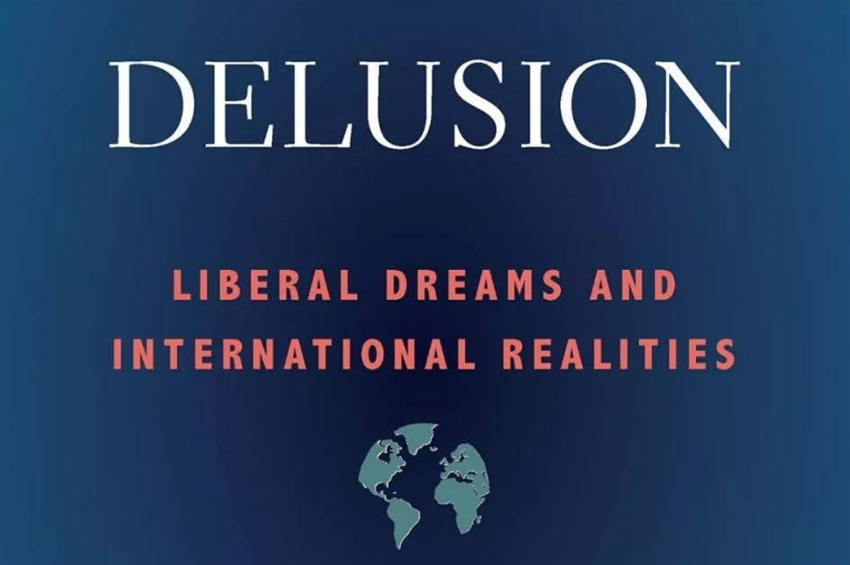
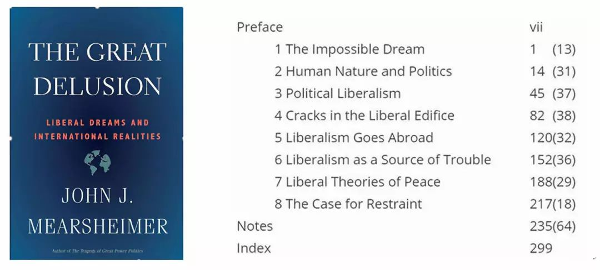

收录于合集

简 介
【作者简介】 迈克尔·林德（Michael Lind）是德克萨斯大学林登·约翰逊公共事务学院（Lyndon B. Johnson School of Public Affairs at the University of Texas）的客座教授，著有《美国战略之路》（the American Way of Strategy）一书。
【来源】 The National Interest , December 15, 2018
【译者】 张 耀

核 心 观 点
约翰·米尔斯海默的 《大妄想 ：自由主义的梦想与国际现实》认为美国追求“自由霸权”的努力失败了，并付出了巨大的代价。
随着冷战的结束，许多现实主义者预计美国将逐渐裁军并遣散。相反，这个国家在削减部分军备的同时，却采取了相反的行动。美国发动战争，将伊拉克驱逐出科威特，干预南斯拉夫内战，并推动北约扩大到包括东欧（许多人希望，直到俄罗斯以暴力干涉）格鲁吉亚和乌克兰。2001年9月11日基地组织袭击后，美国不仅去对抗在阿富汗的塔利班政权，也从事“选择的战争”推翻伊拉克的萨达姆·侯赛因、利比亚的穆阿迈尔·卡扎菲和叙利亚的巴沙尔•阿萨德政权，同时参与了沙特阿拉伯在也门的战争。美国现在在更多的战线上同时进行着比历史上任何时候都多的小规模战争。
在《大妄想：自由主义的梦想与国际现实》一书中，政治学家约翰·米尔斯海默认为，冷战两极所施加限制的消失，使美国有机会重塑世界，以符合美国国内的自由主义政治信条。米尔斯海默是芝加哥大学政治学教授，他从现实主义的角度广泛地论述了国际关系，包括《大国政治的悲剧》。现在，他对美国的意图进行了最全面的分析。任何关于国家和世界政治的争论都必须是图解式的。但对于米尔斯海默来说，教义问答式的简练可能是别人的缺点，但却是一种美德，他的文章和他的分析一样透彻。《大妄想》通俗易懂，但却十分严谨，值得政策制定者、学者和公众阅读。
他的主要论点集中在1989年之后出现的特殊情况，当时美国不仅是世界最重要国家，而且是唯一的超级大国。米尔斯海默认为，一个自由民主国家偶然遇到如此有利的权力平衡态势，以至于它能够拥抱自由霸权。这种情况最有可能出现在一个单极世界中，在那里，一个大国不必担心受到另一个大国的攻击，因为没有另一个竞争对手。那么，自由派的唯一支柱几乎总是会放弃现实主义，而采取自由派的外交政策。自由主义国家有一种根深蒂固的十字军心态，这种心态却很难维持。
这使得美国（历史上唯一自由的超级大国，或者两个，如果19世纪英国算数的话）采取自由主义的霸权战略，“一个国家的目标是将尽可能多的国家转变为自由民主国家，同时也促进形成开放的国际经济并建立国际机构。”
米尔斯海默写道：“随着1989年冷战的结束和1991年苏联的解体，美国成为迄今为止地球上最强大的国家。意料之中的是，克林顿政府从一开始就拥护自由主义霸权，而这一政策在布什和奥巴马政府中始终没有动摇。”
米尔斯海默预言，“自由主义霸权不会实现它的目标，它的失败将不可避免地带来巨大的代价。”“实现全球自由民主社会梦想的主要障碍是民族主义，”这是一种自上而下的特殊意识形态。因此，“民族主义和现实主义几乎总是胜过自由主义。”米尔斯海默认为，认识到这一事实，美国应该放弃冷战后自由霸权的大战略，而采取一种较少干涉主义的“克制”战略。
米尔斯海默毫不费力地推翻了1989年后用来证明美国冷战后自由霸权大战略合理性的三种强化的国际关系理论：民主和平理论、经济独立理论和自由制度主义。在米尔斯海默看来，这些都是对一项政策的合理化解释，而这项政策的真正灵感来自于美国数百年历史的自由主义政治文化。
这本书的大部分内容是关于整个西方世界的自由主义政治和社会思想史的。米尔斯海默指定了一些思想家（有些人可能会说他们是“钉鞋”）分成两类：膨胀的“进步自由主义”和“权变自由主义”，他借用了哲学家约翰·格雷（John Gray）的术语，后者可能会惊讶地发现自己与弗里德里希·哈耶克（Friedrich Hayek）、亚当·斯密（Adam Smith）和约翰·洛克（John Locke）在自由派阵营的同一间工棚里。米尔斯海默从学术课程中强调大名鼎鼎的作家，这可能会被批评为导致他忽视了非学术传统，如社会福音新教，这可以说对美国自由主义威尔逊主义者的态度产生了更大的影响。
但这些都是吹毛求疵。米尔斯海默提出的反对自由主义霸权作为美国的一项大战略的理由是令人信服的。米尔斯海默提出的“约束”的替代方案不太可能被采纳，原因有二。首先是现实主义者自身在对立阵营中的分裂，这些阵营的追随者无法就自由霸权之外的单一现实主义者达成一致。其次是地缘政治与地缘经济学在贸易、移民和创新政策等领域的日益融合，而美国各教派的学术现实主义者对这一主题几乎没有发言权。
米尔斯海默为这所被称为“进攻性现实主义”的学校辩护，反对它的兄弟对手“防御性现实主义”。进攻性现实主义（尽管自由主义者，马克思主义者和其他人一样）有可能来最大化他们的相对实力，因为担心别人会做同样的事情，并认为这样做是合理的。米尔斯海默认为：“国际体系的结构经常迫使大国进行激烈的安全竞争，有时甚至发动战争。国际政治是一件肮脏而野蛮的事情，这不仅仅是因为误入歧途的自由主义思想或其他恶毒的国内势力影响了各国的外交政策。大国偶尔会出于合理的现实原因发动战争。”
米尔斯海默早期对进攻性现实主义的总结恰如其分地命名为《大国政治的悲剧》。这种把世界政治看作是霍布斯式的全面对立的悲观主义观点，遭到了许多防御性现实主义者的反对。例如，米尔斯海默提到了查尔斯·格拉泽的一篇题为“现实主义者是乐观主义者”的文章。他引用了塞巴斯蒂安·罗萨托（Sebastian Rosato）和约翰·舒斯勒（John Schuessler）对防御性现实主义的定义，称其为“没有战争的安全秘方”，并引用马克·特拉亨伯格（Marc Trachtenberg）的话，称“权力并非不稳定”。
当涉及到一个国家（如果有机会）是否应该追求霸权（定义为国际体系中的不平衡或优势权力）的问题时，这两种现实主义学术流派是不同的。令人不快的现实主义回答是：是的，如果你能侥幸逃脱惩罚的话。尽管米尔斯海默批判了自由主义霸权主义，但他并不一定反对美国的霸权主义或霸权主义本身。他指出，中国的崛起增加了美国“必须与潜在的竞争对手竞争的可能性，任何大国都不想面对这种局面。”保留单极世界会更好，尽管这会诱使美国政策制定者坚持自由主义霸权。当谈到世界权力的份额时，进攻性现实主义者赞同梅•韦斯特（Mae West）的观点：“过份的好事也可以是好事。”相比之下，防御性的现实主义者拒绝这种推论，他们的前提是，任何过于强大的国家，必然会被其他大国组成的制衡联盟削弱。作为证据，他们指出，联合政府挫败了查尔斯五世（Charles V .）、拿破仑（Napoleon）、凯撒（Kaiser）、希特勒（Hitler）和苏联对欧洲霸权的争夺。
但历史真的表明，积聚不成比例权力的企图注定要提前失败吗？美国的崛起似乎会驳斥这种观点。在19世纪和20世纪初，英法两国没有通过军事干预来阻止美国在1846-1848年击败墨西哥、在美国内战期间阻止南部分裂、然后在北美建立自己的势力范围，从而在整个非洲大陆扩张。冷战结束后，中国和后苏联时代的俄罗斯试图以牺牲美国为代价来增强自己的实力，但美国的欧洲和东亚盟友并没有联合起来平衡美国的实力。
当我们把世界历史作为一个整体来看，而不是狭隘地聚焦于1648年至1989年之间的欧洲时，那种认为反霸权平衡或多或少是多个国家体系的自动特征的观点就会瓦解。正如英国学者马丁•怀特（Martin Wight）所言，国家制度在历史上是例外，帝国是常态。中国古代的战国制度被中华帝国所取代。希腊政府成立于亚历山大的马其顿帝国，然后经过希腊王国的一段时间，进入罗马帝国的一部分，并以奥斯曼帝国的形式一直持续到第一次世界大战。可以说是多个独立的生存在欧洲竞争性国家体系中的国家是一个侥幸，因为侧翼势力的干预本身并没有被强大的力量所统治（俄罗斯，英国和后来的美国）正如德国学者路德维希·德希奥（Ludwig Dehio）在《不稳定的平衡》（The Precarious Balance）一书中所主张的那样，英国和后来的美国也是如此。在其他地区，连续几轮的比赛淘汰了对手，直到统一该地区的最后一个对手被击败。除了梅•韦斯特（Mae West）的进攻性现实主义理论，我们还可以加上阿加莎•克里斯蒂（Agatha Christie）关于竞争性国家体系高死亡率的理论，然后就没有了。
如果进攻—防御现实主义者是错误的假设“平衡”潜在敌对的霸主是大多数国家的正常行为，而不是“潮流”威胁的力量来安抚它或“推卸责任”，那么，美国可以显著减少其军事预算，减少其联盟没有任何重大损失安全似乎是有风险的，即使是那些没有代表五角大楼和其他外交政策官僚机构从事“威胁通胀”的人。
对于进攻性现实主义者和防御性现实主义者来说，“克制”的含义是不同的。麻省理工学院（Massachusetts Instituteof Technology）学者巴里·波森（Barry Posen）为《克制中的防御性现实主义：美国大战略的新基础》（defensive realismin Restraint: A New Foundation for U.S. Grand Strategy ）提出了当代最令人印象深刻的详尽案例。与米尔斯海默一样，波森反对自由主义霸权。但波森超越米尔斯海默，拒绝任何形式的霸权，这是美国大战略的一个合理目标。
今年早些时候，波森在《外交事务》（Foreign Affairs）杂志的一篇文章中写道：与他的前任不同，特朗普从“自由主义霸权”中拿走了“自由主义”的大部分。他仍然寻求保留美国优越的经济和军事能力，以及作为世界大多数地区安全仲裁者的角色，但他选择放弃民主出口，并放弃许多多边贸易协定。换句话说，特朗普带来了美国全新的大战略：狭隘的霸权主义。
主张缩小“离岸平衡”外交政策的防御性现实主义者，希望制定一项宏大的战略，而不是以任何形式的美国霸权，无论是自由主义还是非自由主义。2016年，米尔斯海默与另一位重要的现实主义思想家、外交事务领域的斯蒂芬沃尔特（Stephen Walt）合著了一篇支持离岸平衡的文章。但是，米尔斯海默的进攻性现实主义方法的逻辑可能导致人们得出结论认为，塞缪尔·亨廷顿所谓的“国际首要地位”的某些版本不仅优于自由霸权，而且也有利于离岸。实际上，米尔斯海默和沃尔特在他们的论文中认为，他们的离岸平衡模式将保持美国的主导地位。
这是米尔斯海默自己在《大妄想》中的结论：“此外，现实主义要求美国应该寻求保持世界上最强大的国家地位。它应该保持西半球的霸权，确保没有任何其他大国主宰它在世界上的区域，从而成为它的竞争对手。不过，基于现实主义的外交政策可能没有基于自由主义的外交政策那么好战。”
因此，经过审视，不同的现实主义者以不同的方式定义了美国提出的“克制”或“离岸平衡”的战略选择。美国现实主义思想家推翻了占主导地位的自由主义霸权共识的成功，可能会导致前盟国之间的冲突，这证明了结构现实主义的逻辑延伸到学术国际关系部门。
除了内部分歧之外，一个可能限制“克制”学派对美国外交政策影响的因素，是大多数学术现实主义者关注的焦点，即忽视贸易、经济发展和产业政策的传统军事威胁。公平地说，新现实主义者确实注重工业能力，认为这是一个大国成为一个体系中“极点”的诸多特征之一。但除了一些例外，包括已故的罗伯特•吉尔平（Robert Gilpin），美国国际关系的思想家们对工业发展并没有太多的发言权。
考虑到历史上现实政治的实践者一直痴迷于提高其城邦、帝国或民族国家的经济能力，这一点令人惊讶。从亚历山大·汉密尔顿到亨利·克莱，再到亚伯拉罕·林肯和威廉·麦金利，以关税为基础的进口替代、国家基础设施发展以及外交政策，在一项计划中被联合起来，目的是把美国变成一个大国，与工业化的英国势均力敌或更胜一筹。保护主义的经济民族主义也是奥托•冯•俾斯麦（Otto von Bismarck）和明治维新（The Meiji restoration）的现实主义战略的核心。世界经济远非建立在自由贸易和劳动力流动的基础上，17世纪至1945年，学术界新奥主义者研究最多的时期是重商主义和殖民主义的鼎盛时期，在这个时期，贸易战和军事战争被视为合法的、互补的战略工具。如果你列出著名的西方现实主义者——汉密尔顿、本杰明•迪斯雷利、俾斯麦、夏尔•戴高乐——你就不会在他们中间找到一个自由贸易者。
自由主义学者往往忽视这段历史，除非它是一部罪恶和错误的编年史，值得痛惜。米尔斯海默指出，整个自由主义范式是建立在个体在一个社会中自由互动的设想之上的，从理论上讲，这个社会应该以自由的全球市场以及其他领域的超国家机构的形式包括整个人类。自由主义的乌托邦目标（一个后国家的、一体化的全球经济）已经被马克思主义社会主义者与自由主义者分享，然而，他们增加了国际工人阶级团结起来反对“资产阶级”民族主义的幻想。在自由主义者和社会主义者的共同抵制下，捍卫经济民族主义和国家支持的工业资本主义的任务留给了现实主义者——除了美国大学的国关体系。
这是为什么？我认为，答案必须从二战后美国研究型大学的演变中寻找。当时在经济系，新古典经济学（19世纪经济自由主义的简化、高度数学化的版本）边缘化了对立的传统，包括与各种经济民族主义和发展主义相一致的更实用的历史或制度经济学传统。
与此同时，在20世纪50年代、60年代和70年代，美国的新现实主义作为一门学科出现，是对战前国际关系学派的一种反应，这些学派致力于国际联盟、国际法院等的理想主义方案。受到“古典现实主义者”，他们中的许多人是欧洲大陆难民，如汉斯•摩根索（Hans Morgenthau）和亨利•基辛格（Henry Kissinger）美国新闻部的美国新现实主义者试图发展严格而系统的现实主义理论，这些理论符合实证主义美国社会科学的标准，不同于美术和格言智慧文学由古典现实主义者赫尔教授撰写。
因此，学术界的新古典主义经济学和新现实主义将世界一分为二。新古典主义经济学忽视了战争和外交，而新现实主义经济学忽视了贸易、移民、金融和国家支持的工业化，这些学科都留给了国际政治经济学的国际关系学科来研究，然而，国际政治经济学对待这些学科的态度是自由主义的，而不是民族主义的。学术经济学基于涉及仿制公司或个人的程式化思想实验; 在下一个研讨室，许多国际关系理论致力于类似的关于“极性”的抽象思想实验。新古典主义经济学家和防御性现实主义者被吸引到用社会力量或结构对个人的作用来解释社会的观点，他们以不同的方式崇拜均衡——均衡在经济学中被定义为价格结算，在世界政治中或多或少被定义为权力自动平衡。推动系统的一个元素，它将摇摆，直到平衡被恢复。
在1945年后的美国大学体系中，一门学科越像物理学，它的声望就越高。在这种体系中，试图把混乱的世界政治变成一门吝啬的社会科学，或许是一个不错的职业选择。但是，学术界的新现实主义者把国家视为连贯、理性的行动者，却可悲地忽视了一体化的跨国帝国和集团在世界政治中的中心地位。
在这本杂志的一篇题为《集团政治》的文章中，作者提出，要理解当代美、德、日之间的关系，不能以古典现实主义者和新现实主义者都认同的假设为基础，认为它们可以被视为类似的独立的“全谱”国家。相反，德国和日本仍然是半主权国家，依赖美国的军事保护，在经济上专长于美国主导的制造业。以法德两国为核心的欧盟（EU），本身是一个等级较低的集团，隶属于华盛顿领导的更大的等级集团。作为欧元区的霸主，美国专业独特的服务（不仅包括单边军事保护，也提供一个共同的货币进入美国市场）出口集团的其他成员，往往损害美国的制造商。美国冷战联盟系统这一事实并没有解散后冷战可以解释的论文，到1989年，它已经不再是传统的军事联盟，已经成为深入集成军工的准联邦集团，由供应链和管理联系在一起，对美国依赖国家的官员无法想象他们的国家处在现有的美式和平之外的情形。
没有证据表明唐纳德•特朗普（Donald Trump）希望瓦解他从前任那里继承下来的高度一体化的美国集团。相反，他的目标似乎是迫使美国的军事依赖国在一定程度上为集团防务做出更大贡献，同时在一定程度上重新平衡集团内的制造业分布，使之有利于美国制造商——应该指出的是，这两个目标是他与前几任总统都认同的。在特朗普的现实主义版本中，这个重新平衡的美国集团，包括北美、欧洲和东亚的工业三位一体，而不仅仅是美国，似乎将在经济和军事各个方面应对中国的挑战。
集团主义精神（Blocism）可以被看作是旧式帝国主义的继承者，它也受到同样的零和重商主义逻辑的启发。军事力量依靠先进的民用工业。对国家电力来说，最重要的是以规模效益递增为特征的制造业，也就是说，受限制的国内或殖民地市场越大，生产经营规模越大，工业效率越高。相反，在可预见的未来，技术不太可能消除生产规模经济。规模的重要性反映在这样一个事实上：不成比例的成功跨国公司在美国、日本和德国这三个人口最多的资本主义国家的国内市场的销售额占其销售额的近一半。本土市场效应有助于解释为什么波音和空客在全球喷气式飞机建设中占据主导地位，以及为什么搜索引擎和社交媒体平台被谷歌（Google）、亚马逊（Amazon）和脸书（Facebook）等美国公司所主导。
规模对现代工业生产的好处削弱了许多进攻性现实主义者和防御性现实主义者所认同的观点，即美国应该只关注来自已经发达工业国家的短期军事威胁，放弃与竞争对手在不发达地区争夺影响力的做法。与大多数现实主义者一样，米尔斯海默写道：“这意味着美国不应该在非洲、中亚或波斯湾以外的中东地区作战。例如，在冷战期间，现实主义者坚持认为，美国的政策制定者应该避免在“第三世界”或“发展中世界”发生战争，因为那里充斥着没有什么战略意义的小国。”
但是十七、十八世纪的重商主义者，十九、二十世纪的殖民主义者以及冷战期间的美苏战略家，常常设法把贫穷的人口和领土纳入他们的集团，同时拒绝向他们的对手开放这些地区。他们这样做，而不是这些领域的直接贡献的基础上，如果有的话，酒店的财富和权力，而是着眼于未来潜在作为国家制造业出口垄断市场，原料来源以及一些民用或军用劳动。正义和非正义殖民主义往往是不道德的，但并非不合理的。一个大国通过将外国纳入其联盟体系和扩大的国内市场来扩大其相对实力，要比单纯依靠国内人口或生产率增长来提高实力容易得多。
反帝国主义同防御性的现实主义者一样，在过去常常主张帝国的代价大于利益。但这取决于时间框架。英国、法国和其他欧洲殖民列强在19世纪末以及两次世界大战之间扩大了对非洲、亚洲和中东大部分地区的控制，他们认为自己的帝国将世代存在。他们愿意支付初始成本，作为未来对帝国军事和经济实力贡献的首付款。他们没有预见到两次世界大战会削弱他们，也没有预见到美国和苏联会使他们黯然失色，这两个国家分别出于自由主义和社会主义意识形态的原因，寻求逐步消除欧洲殖民主义。
流行的民族主义也不会不可避免地毁灭帝国及其现代继承者——跨国集团。相反，多民族区域帝国已经成为世界历史的准则。民族独立运动往往只有在帝国权力被战争削弱或其对手代表叛乱分子进行干预时才会取得成功。美国之所以存在，是因为法国在美国独立战争期间干涉英国。因为英国拒绝干涉美国内战，所以美国联邦不存在。
第一次世界大战中战败国家的帝国被战胜国消灭，而战胜国的帝国却完好无损。第二次世界大战后的非殖民化由于冷战和大都市条件的削弱而加速；我们没有理由相信，如果没有这些因素，情况会如此迅速地发生。美国被赶出印度支那，而不是单靠越南民族主义（有反共以及共产主义的民族主义者），但在越南北部和南部同盟的不断补给的苏联和中国，和华盛顿的恐惧引发直接进入中国的朝鲜战争。在马来西亚和菲律宾，缺乏外部避难所和大国赞助的共产主义叛乱被击败了，就像整个拉丁美洲一样，只有古巴和尼加拉瓜有一段时间例外。只有在戈尔巴乔夫的自由化改革削弱了中央集权之后，苏联的民族主义叛乱才获得了成功；例如1953年的东德、1956年的匈牙利、1968年的捷克斯洛伐克，使得莫斯科已经相当有能力粉碎民族主义者。
米尔斯海默引用了彼得·利伯曼的作品，他打破了美国现实主义者的共识，为他的书名所提出的问题提供了一个有条件的“是”。但大多数米尔斯海默有限的讨论经济学的错觉是自由的批判理论，经济相互依存促进大国和平，而不是对中国和美国竞争建立非洲的基础设施的问题是否有意义。如果说非洲目前没有任何国家有能力对美国构成军事威胁，就像太多的新现实主义学者所做的那样，这种说法没有抓住竞争的关键。
美国外交政策需要的是现实主义与经济民族主义的结合。这应该从以国家主导取代自由主义霸权作为美国大战略的基础开始。霸权国将不是孤立的民族国家美国，而是由美国领导的霸权集团，并维持其目前的大多数盟友，在集团内部实现一定程度的再平衡。
美国集团可以通过加入新的国家逐步增加，但新保守主义和新自由主义试图把整个地球变成一个市场和一个“基于规则秩序”的监管体系，通过战争和“休克疗法”的自由经济全球化已经是一个灾难。在未来，主要以北美为基础的美国集团，如果可能的话，还包括欧洲，可能不得不与一个中国集团、或许还有一个印度集团，以及一个以莫斯科为中心的欧亚集团共存，但俄美之间没有达成谅解。在全球范围内，美国及其盟国应该采取“协调平衡”战略，试图维持地区大国集团之间的和谐关系，同时确保在发生集团间冲突时，山姆大叔担任主席。在二十世纪的三次世界冲突期间，建立人口，资源和工业最集中的大国联盟董事会。这是一项基于华盛顿及其盟友依赖关系的不平衡权力优势和作为其他三大战略的替代战略：自由霸权，一种最小的防御性现实主义战略，其中美国是一个“离岸平衡者”，一种新的孤立主义策略。
在经济领域，反对自由主义霸权，支持国家在安全战略领域的首要地位，同时也会反对自由主义理想，即建立一个受规则支配的全球自由市场，支持战略贸易、投资和移民政策。美国不会，也不应该退回自给自足的保护主义；相反，它应该努力成为世界上最大、最富有成效的经济集团的一部分。但美国应通过禁运、制裁或有管理的贸易，尽量减少与军事对手和潜在对手的金融和工业往来。在考虑到其他欧盟成员国的经济利益的同时，它不应该允许经济上的相互依赖，甚至是与盟国的相互依赖，破坏美国军事力量所依赖的工业能力。这包括保持美国本土与军事相关的工业生产快速增长的能力，而不仅仅是在技术创新方面处于领先地位。
尽管这在现代自由霸权主义者看来是异端邪说，但亚历山大•汉密尔顿（Alexander Hamilton）和两位罗斯福对这种做法应该很熟悉。不用说，任何合法的美国民族主义在国内都将是自由、符合宪法和民主的，尽管美国放弃了误入歧途的十字军东征，放弃了以武力或颠覆国外不具威胁性的不民主政权。
米尔斯海默可能不赞成这种国家主导的大战略。此外，要想成功，政府对经济的广泛干预更像是米尔斯海默的“进步自由主义”（progressive liberalism），而不是他称之为“权变自由主义”（modus vivendi liberalism）的小政府古典自由主义（他似乎更喜欢后者）。但我们可以证明，作者所概述的策略与米尔斯海默进攻性的现实主义世界观是一致的。
然而，由于它强调获取和保持不平衡的优势力量，这种现实主义和民族主义的结合很可能会遭到防御性现实主义者的反对，他们认为特朗普的战略是“非自由主义霸权”。防御性现实主义者反对自由主义霸权，但很少有人（如果有的话）质疑作为自由主义传统核心的反民族主义自由市场经济。这使得防御性的现实主义者和自由主义者之间的联盟成为可能，他们倾向于以反国家主义和激进的个人主义为基础，而不是以现实政治为基础，反对大规模的军事和外国干预。不幸的是，对于那些支持“现实—自由主义”联盟，美国人支持的组合的数量显著降低国防开支，更多的外包产业和低工资的移民是可以忽略的，相当于自由主义政党的支持者，这就不超过几个百分点的选票最多的选举。
一个以美国为首、拥有大量财富和权力的集团，若要保持或扩大其规模，其谨慎努力可能会遭到许多防御性现实主义者及其自由主义盟友的否定。但是，那些主张以国家至上取代自由主义霸权的美国外交政策指导原则的人，可以从“大妄想”中找到灵感和洞见。（完）

【拓展阅读-《大妄想》新著简介】
美国著名国际关系学者，国关理论进攻性现实主义代表学者，芝加哥大学政治学教授约翰·米尔斯海默(John J.Mear- sheimer)，近期新著《大妄想：自由主义的梦想与国际现实》由耶鲁大学出版社出版，此著作或将成为作者《大国政治的悲剧》代表作之后的又一力作。
为什么自由主义霸权注定要失败？著名国际关系学者约翰·米尔斯海默(John Mearsheimer)认为，美国自冷战结束以来奉行的外交政策——自由主义霸权注定要失败。他认为，华盛顿应该采取一种更为克制的外交政策，其基础是基于对民族主义和现实主义如何在海外约束大国行为的充分理解。
西方世界普遍认为，美国应该把自由民主传播到世界各地，培育开放的国际经济秩序，建立自由主义制度。按照美国的形象重塑世界各国政策，致力于保护人权、促进和平、让世界因民主而安全。但事实并非如此。相反，美国最终成为一个高度军事化的国家，在各地进行破坏和平、损害人权和威胁自由价值观的战争。米尔斯海默将告诉我们为什么会是这样。
-
目 录
-
前 言
-
不可能实现的梦想
-
人性与政治
-
政治自由主义
-
自由主义大厦的裂缝
-
自由主义走向海外
-
自由主义是一切麻烦的根源
-
自由主义的和平理论
-
克制的理由
-
注释
-
文献
-
基本信息
-
Hardcover: 328 pages
-
Publisher: Yale University Press (September 25, 2018)
-
Language: English
-
ISBN-10: 0300234198
-
ISBN-13: 978-0300234190
-
Product Dimensions: 6.1 x 1.1 x 9.2 inches
-
Shipping Weight: 1.4 pounds
-
作者简介
约翰·米尔斯海默(John J.Mear- sheimer)，美国芝加哥大学政治学教授、美国艺术与科学学院院士，著名国际关系理论家。他的代表作《大国政治的悲剧》已经被翻译成中文出版，他的"进攻性现实主义"理论在中国国关理论界激起了广泛的关注和争鸣。
声明
此文为国政学人微信公众平台外文编译系列文章之一，由国政学人编辑首发，不代表本平台观点。欢迎转发分享，未经授权谢绝转载。如有问题，请联系guozhengxueren@163.com
更多阅读
国政学人 （ID：guozhengxueren)
为方便学人及时阅读高质量文章
别忘把国政学人设置 星标 哦~